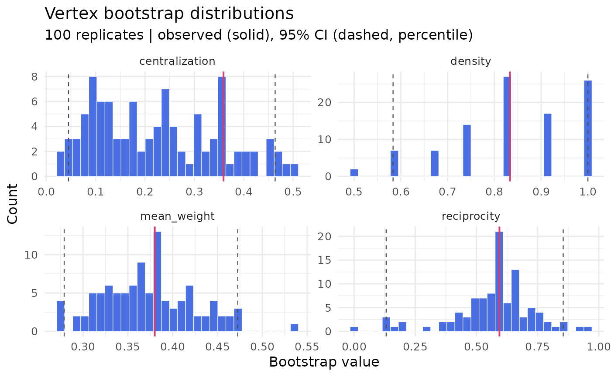

Non-parametric vertex bootstrap of a single observed network (Snijders & Borgatti 1999). Vertices are resampled with replacement and the weight matrix is rebuilt from the original entries of the resampled vertex pairs; network-level statistics computed on each replicate give bootstrap distributions, standard errors, and confidence intervals.
Unlike bootstrap_network, which resamples the underlying
cases (sequences or rows) and therefore requires the raw data stored in
the netobject, the vertex bootstrap needs only the weight
matrix. It works on any netobject - including data-less ones
such as build_mlvar constituents or as_tna(mcml)
elements - and on plain weight matrices. The two procedures answer
different questions: the case bootstrap quantifies sampling-of-subjects
uncertainty in the edge weights; the vertex bootstrap quantifies
structural uncertainty of whole-network descriptives given the one
network you observed.
Usage
vertex_bootstrap(
x,
iter = 1000L,
ci_level = 0.05,
ci_method = c("percentile", "basic"),
statistics = NULL,
statistic_fn = NULL,
directed = NULL,
seed = NULL
)Arguments
- x
A
netobject(frombuild_networkor any builder), acograph_network, or a square numeric weight matrix.- iter
Integer. Number of bootstrap replicates (default 1000).
- ci_level
Numeric. Significance level for the confidence intervals (default 0.05 for 95% CIs).
- ci_method
Character.
"percentile"(default) for empirical quantile intervals, or"basic"for intervals reflected around the observed value (Davison & Hinkley 1997, eq. 5.6).- statistics
Character vector selecting built-in statistics (see Details). Default: all applicable to the network's directedness.
- statistic_fn
Optional named list of functions, each taking the weight matrix and returning a single numeric value. Computed alongside the built-ins.
- directed
Logical or NULL. Directedness of the network. NULL (default) reads
x$directedwhen available, otherwise falls back to matrix symmetry.- seed
Integer or NULL. RNG seed for reproducibility.
Value
An object of class "net_vertex_bootstrap" containing:
- summary
Tidy data frame, one row per statistic:
statistic,observed,boot_mean,boot_sd,bias,ci_lower,ci_upper.- boot_stats
iterx n_statistics matrix of replicate values.- observed
Named vector of observed statistics.
- iter, ci_level, ci_method, directed, n_nodes
Configuration.
Details
Each replicate draws n vertex indices with replacement and sets
W_b[i, j] = W[idx_i, idx_j]. When the same original vertex is
drawn for two different positions, the off-diagonal cell would be a
structural self-pair; following Snijders & Borgatti, such cells are
filled with the weight of a randomly chosen pair of distinct original
vertices. Diagonal entries carry the original self-weight of the
resampled vertex (W[idx_i, idx_i]) - self-loops are meaningful
in transition networks and are never altered. For undirected networks
the substitution is applied symmetrically so replicates stay symmetric.
Built-in statistics (all computed on the off-diagonal part of the weight matrix):
densityProportion of non-zero off-diagonal cells.
mean_weightMean of the non-zero off-diagonal weights.
centralizationFreeman-type strength centralization:
sum(max(s) - s) / ((n - 1) * max(s))wheresis total node strength on absolute weights. 0 when all nodes have equal strength, approaching 1 for a star.reciprocityDirected networks only. Weighted reciprocity
sum(pmin(|W|, |t(W)|)) / sum(|W|)over off-diagonal cells: the proportion of total weight that is reciprocated.
References
Snijders, T. A. B., & Borgatti, S. P. (1999). Non-parametric standard errors and tests for network statistics. Connections, 22(2), 161-170.
Davison, A. C., & Hinkley, D. V. (1997). Bootstrap Methods and their Application. Cambridge University Press.
See also
bootstrap_network for case-resampling edge-weight
inference, centrality_stability for case-dropping
centrality stability.
Examples
seqs <- data.frame(
T1 = c("plan", "code", "debug", "plan", "test", "code"),
T2 = c("code", "debug", "code", "plan", "code", "test"),
T3 = c("debug", "code", "plan", "code", "debug", "plan"),
T4 = c("test", "plan", "test", "debug", "plan", "code")
)
net <- build_network(seqs, method = "relative")
vb <- vertex_bootstrap(net, iter = 100, seed = 1)
vb$summary
#> statistic observed boot_mean boot_sd bias ci_lower
#> 1 density 0.8333333 0.8433333 0.13415153 0.01000000 0.58333333
#> 2 mean_weight 0.3800000 0.3734656 0.05149123 -0.00653441 0.27899554
#> 3 centralization 0.3589744 0.2255932 0.12632830 -0.13338118 0.04511327
#> 4 reciprocity 0.5939850 0.5726307 0.16772881 -0.02135424 0.13107527
#> ci_upper
#> 1 1.0000000
#> 2 0.4725536
#> 3 0.4635149
#> 4 0.8545707
# \donttest{
plot(vb)

# }